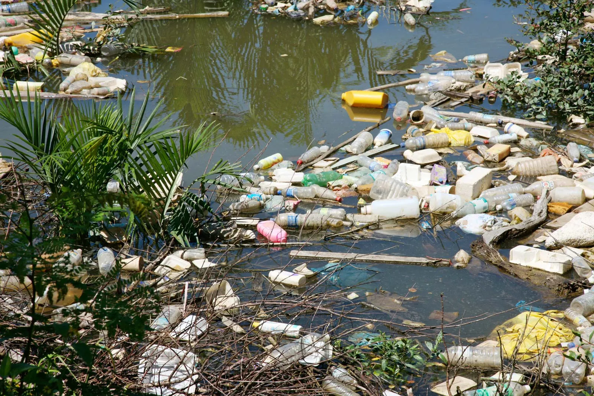

If not disposed of properly,radioactive waste from nuclear power plants can escape into the environment. Radioactive waste can harm living things and pollute the water.
Sewage that has not been properly treated is a common source of water pollution. Many cities around the world have poor sewage systems and sewage treatment plants. Delhi, the capital of India, is home to more than 21 million people. More than half the sewage and other waste produced in the city are dumped into the Yamuna River. This pollution makes the river dangerous to use as a source of water for drinking or hygiene. It also reduces the river's fishery, resulting in less food for the local community.
A major source of water pollution is fertilizer used in agriculture. Fertilizer is material added to soil to make plants grow larger and faster. Fertilizers usually contain large amounts of the elements nitrogen and phosphorus, which help plants grow. Rainwater washes fertilizer into streams and lakes. There, the nitrogen and phosphorus cause cyanobacteria to form harmful algal blooms.
If not disposed of properly,radioactive waste from nuclear power plants can escape into the environment. Radioactive waste can harm living things and pollute the water.
Sewage that has not been properly treated is a common source of water pollution. Many cities around the world have poor sewage systems and sewage treatment plants. Delhi, the capital of India, is home to more than 21 million people. More than half the sewage and other waste produced in the city are dumped into the Yamuna River. This pollution makes the river dangerous to use as a source of water for drinking or hygiene. It also reduces the river's fishery, resulting in less food for the local community.
A major source of water pollution is fertilizer used in agriculture. Fertilizer is material added to soil to make plants grow larger and faster. Fertilizers usually contain large amounts of the elements nitrogen and phosphorus, which help plants grow. Rainwater washes fertilizer into streams and lakes. There, the nitrogen and phosphorus cause cyanobacteria to form harmful algal blooms.
Rain washes other pollutants into streams and lakes. It picks up animal waste from cattle ranches. Cars drip oil onto the street, and rain carries it into storm drains, which lead to waterways such as rivers and seas. Rain sometimes washes chemical pesticides off of plants and into streams. Pesticides can also seep into groundwater, the water beneath the surface of the Earth.
Heat can pollute water. Power plants, for example, produce a huge amount of heat. Power plants are often located on rivers so they can use the water as a coolant. Cool water circulates through the plant, absorbing heat. The heated water is then returned to the river. Aquatic creatures are sensitive to changes in temperature. Some fish, for example, can only live in cold water. Warmer river temperatures prevent fish eggs from hatching. Warmer river water also contributes to harmful algal blooms.

Another type of water pollution is simple garbage. The Citarum River in Indonesia, for example, has so much garbage floating in it that you cannot see the water. Floating trash makes the river difficult to fish in. Aquatic animals such as fish and turtles mistake trash, such as plastic bags, for food. Plastic bags and twine can kill many ocean creatures. Chemical pollutants in trash can also pollute the water, making it toxic for fish and people who use the river as a source of drinking water. The fish that are caught in a polluted river often have high levels of chemical toxins in their flesh. People absorb these toxins as they eat the fish.
Garbage also fouls the ocean. Many plastic bottles and other pieces of trash are thrown overboard from boats. The wind blows trash out to sea. Ocean currents carry plastics and other floating trash to certain places on the globe, where it cannot escape. The largest of these areas, called the Great Pacific Garbage Patch, is in a remote part of the Pacific Ocean. According to some estimates, this garbage patch is the size of Texas. The trash is a threat to fish and seabirds, which mistake the plastic for food. Many of the plastics are covered with chemical pollutants.